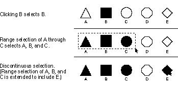
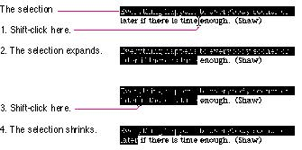
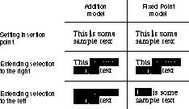
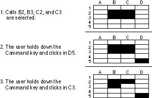

|
Selection MethodsThis section describes various selection techniques: selection by clicking, selection by dragging, extending a selection, and discontinuous selection. Figure 10-15 shows some of the methods.Figure 10-15 Selection techniques  Selection by ClickingThe most straightforward method of selecting an object is by clicking it once. Icons and most other things that can be selected are selected in this way. The user positions the pointer over the desired object, then presses and releases the mouse button.Selection by DraggingThe user selects a range of objects by dragging through them. Although the exact meaning of the selection depends on the type of application, the procedure is always the same:
Changing a Selection With Shift-ClickA user can extend a selection by holding down the Shift key and clicking the mouse button. This action is called Shift-clicking. Exactly what happens next depends on the context.In text or an array, the result of the Shift-click is always the selection of a range. The position where the button is clicked becomes the new endpoint of the range. If the user Shift-clicks within the current range, the new range will be smaller than the old range. Usually, if the user then Shift-clicks in another location, the additional data is included in the selection. In arrays, however, a different paradigm can be implemented in which the selection always moves from the current cell to wherever the user Shift-clicks, changing rather than extending the selection. This model works only in applications such as arrays, where the current cell is highlighted and the user can always see the active cell. In this case, the user always knows the fixed point from which the selection will start. Extended selections can be made, even across the panes of a split window. Figure 10-16 shows the effect of extending and shrinking a range of text using Shift-click. Figure 10-16 Expanding and shrinking a text selection  There are
two methods for extending a continuous selection using
Shift-click: the addition method and the fixed-point
method. The addition method Figure 10-17 Extending text selections using the addition and fixed-point methods  When considering which method to use in your application, keep in mind that the addition method provides more flexibility by allowing users to extend a selection in both directions rather than in only one direction, as in the fixed-point method. The addition method also provides greater consistency in terms of extending a selection; the fixed-point method can actually end up shrinking a selection rather than extending it, as shown in Figure 10-16. In both methods, if the user positions the insertion point within a selection and Shift-clicks, the selection is shortened from the right side of the selection to the location of the insertion point. In graphics applications, objects aren't usually
considered to be in any particular sequence. A selection is
extended by adding objects to it, and the added objects do
not have to be adjacent to the objects already selected.
The user can add either an individual object or a range of
objects to the selection by holding down the Shift key
before making the additional selection (Shift-click). When
the user does this, the objects between the current
selection and the new object are not automatically included
in the selection. This kind of selection is called
discontinuous selection. If the user holds down
the Changing a Selection With Command-ClickIn the case of graphics, all selections are discontinuous selections because graphic objects are discrete. This is not the case with arrays and text, in which an extended selection made by a Shift-click always includes everything between the old anchor point and the new active end. In arrays and text, discontinuous selections are made by clicking while holding down the Command key.To make a discontinuous selection in a text or array
application, the user selects the first piece in the usual
way and holds down the Command key while selecting the
remaining pieces. Each piece is selected in the same way as
if it were the whole selection, but because the Command key
is held down, the new pieces are added to the
existing selection instead of replacing it. If one of the
pieces selected with Command-click is already within an
existing Figure 10-18 shows the process of adding cells to and removing cells from a discontinuous selection. Figure 10-18 Discontinuous selection within an array  Not all applications support discontinuous selections, and those that do might restrict the operations a user can perform on them. For example, a word processor might allow the user to choose a font after making a discontinuous selection, but not allow the user to type replacement characters. In this situation, it wouldn't be apparent to users which part of the selection the characters would replace. Decide what makes sense in the context of your application and test it with users to make sure that their needs are met. |